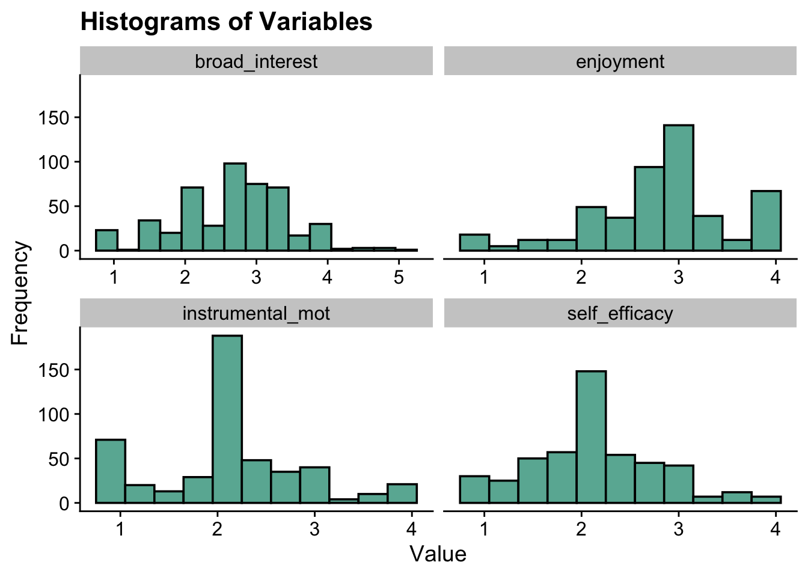
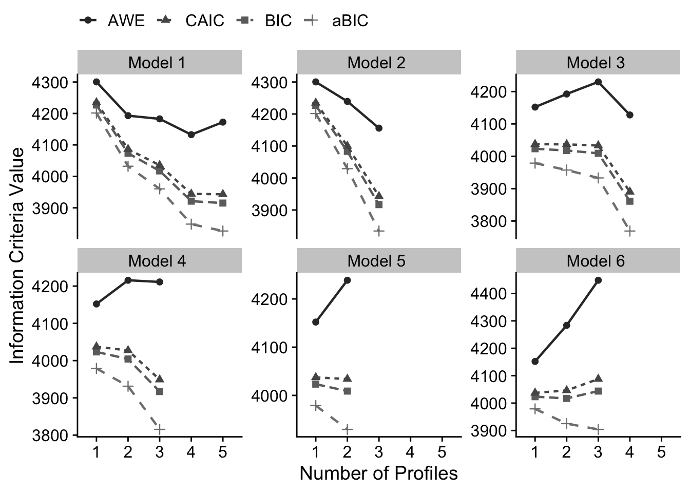

7 Enumeration
Example: PISA Student Data
- The first example closely follows the vignette used to demonstrate the tidyLPA package (Rosenberg, 2019).
- This model utilizes the
PISAdata collected in the U.S. in 2015. To learn more about this data see here. - To access the 2015 US
PISAdata & documentation in R use the following code:
Variables:
broad_interest-
composite measure of students’ self reported broad interest
enjoyment-
composite measure of students’ self reported enjoyment
instrumental_mot-
composite measure of students’ self reported instrumental motivation
self_efficacy-
composite measure of students’ self reported self efficacy
#devtools::install_github("jrosen48/pisaUSA15")
#library(pisaUSA15)7.1 Latent Profile Models
Latent Profile Analysis (LPA) is a statistical modeling approach for estimating distinct profiles of variables and uses continuous - rather than categorical - indicators. Unlike latent class analysis, which uses categorical indicators, LPA models the means, variances, and covariances of continuous indicators within each latent profile.
7.2 Terminology for specifying variance-covariance matrix
The code used to estimate LPA models in this walkthrough is from the tidyLPA package.
TidyLPA(source) is an R package designed to estimate latent profile models using a tidy framework.
It can interface with Mplus via the MplusAutomation package, enabling the estimation of latent profile models with different variance-covariance structures.
-
model 1Profile-invariant / Diagonal: Equal variances, and covariances fixed to 0 -
model 2Profile-varying / Diagonal: Free variances and covariances fixed to 0 -
model 3Profile-invariant / Non-Diagonal: Equal variances and equal covariances- Note: an alternative to Model 3 is freely estimating the covariances
-
model 4Free variances, and equal covariances -
model 5Equal variances, and free covariances -
model 6Profile Varying / Non-Diagonal: Free variances and free covariances
7.2.1 Model 1
Profile-invariant/diagonal:
Equal Variances: Variances are fixed to equality across the profiles (i.e., variances are constrained to be equal for each profile).
Covariances fixed to zero (i.e., the off-diagonal cells of the matrix are zero).
The most parsimonious model and the most restricted.
\[ \begin{pmatrix} \sigma^2_1 & 0 & 0 \\ 0 & \sigma^2_2 & 0 \\ 0 & 0 & \sigma^2_3 \\ \end{pmatrix} \]
7.2.2 Model 2
Profile-varying/diagonal:
Free variances: Variances parameters are freely estimated across the profiles (i.e., variances vary by profile).
Covariances fixed to zero (i.e., the off-diagonal cells of the matrix are zero).
This model is more flexible and less parsimonious than model 1.
\[ \begin{pmatrix} \sigma^2_{1p} & 0 & 0 \\ 0 & \sigma^2_{2p} & 0 \\ 0 & 0 & \sigma^2_{3p} \\ \end{pmatrix} \]
7.2.3 Model 3
Profile-invariant/ non-diagonal or unrestricted:
Equal variances: Variances are fixed to equality across profile. (i.e., variances are constrained to be same for each profile).
-
Equal Covariances: The covariances are now estimated and constrained to be equal.
- An alternative to Model 3 is freely estimating the covariances (Model 5 here).
\[ \begin{pmatrix} \sigma^2_1 & \sigma_{12} & \sigma_{13} \\ \sigma_{12} & \sigma^2_2 & \sigma_{23} \\ \sigma_{13} & \sigma_{23} & \sigma^2_3 \\ \end{pmatrix} \]
7.2.4 Model 4
Varying means, varying variances, and equal covariances:
Free variances: Variances parameters are freely estimated across profiles (i.e., variances vary by profile).
Equal Covariances: Covariances are constrained to be equal.
This model is also considered to be an extension of Model 3.
\[ \begin{pmatrix} \sigma^2_{1p} & \sigma_{12} & \sigma_{13} \\ \sigma_{12} & \sigma^2_{2p} & \sigma_{23} \\ \sigma_{13} & \sigma_{23} & \sigma^2_{3p} \\ \end{pmatrix} \]
7.2.5 Model 5
Varying means, equal variances, and varying covariances:
Equal variances: Variances are fixed to equality across the profiles. (i.e., variances are constrained to be same for each profile).
Free Covariances: Covariances are now freely estimated across the profiles.
This model is also considered to be an extension of Model 3.
\[ \begin{pmatrix} \sigma^2_{1} & \sigma_{12p} & \sigma_{13p} \\ \sigma_{12p} & \sigma^2_{2} & \sigma_{23p} \\ \sigma_{13p} & \sigma_{23p} & \sigma^2_{3} \\ \end{pmatrix} \]
7.2.6 Model 6
Profile-varying / Non-diagonal:
Free variances: Variances parameters are freely estimated across profiles (i.e., variances vary by profile).
Free Covariances: Covariances are now freely estimated across the profiles.
This is the most complex and unrestricted model. It is also the least parsimonious
Note: The unrestricted model is also sometimes known as Model 4.
\[ \begin{pmatrix} \sigma^2_{1p} & \sigma_{12p} & \sigma_{13p} \\ \sigma_{12p} & \sigma^2_{2p} & \sigma_{23p} \\ \sigma_{13p} & \sigma_{23p} & \sigma^2_{3p} \\ \end{pmatrix} \]
7.3 Load packages
library(naniar)
library(tidyverse)
library(haven)
library(glue)
library(MplusAutomation)
library(here)
library(janitor)
library(gt)
library(tidyLPA)
library(pisaUSA15)
library(cowplot)
library(filesstrings)
library(patchwork)
library(RcppAlgos)7.4 Prepare Data
pisa <- pisaUSA15[1:500,] %>%
dplyr::select(broad_interest, enjoyment, instrumental_mot, self_efficacy)7.5 Descriptive Statistics
Quick Summary
summary(pisa)
#> broad_interest enjoyment instrumental_mot
#> Min. :1.000 Min. :1.00 Min. :1.000
#> 1st Qu.:2.200 1st Qu.:2.40 1st Qu.:1.750
#> Median :2.800 Median :3.00 Median :2.000
#> Mean :2.666 Mean :2.82 Mean :2.129
#> 3rd Qu.:3.200 3rd Qu.:3.00 3rd Qu.:2.500
#> Max. :5.000 Max. :4.00 Max. :4.000
#> NAs :23 NAs :14 NAs :21
#> self_efficacy
#> Min. :1.000
#> 1st Qu.:1.750
#> Median :2.000
#> Mean :2.125
#> 3rd Qu.:2.500
#> Max. :4.000
#> NAs :23Mean Table
ds <- pisa %>%
pivot_longer(broad_interest:self_efficacy, names_to = "variable") %>%
group_by(variable) %>%
summarise(mean = mean(value, na.rm = TRUE),
sd = sd(value, na.rm = TRUE))
ds %>%
gt () %>%
tab_header(title = md("**Descriptive Summary**")) %>%
cols_label(
variable = "Variable",
mean = md("M"),
sd = md("SD")
) %>%
fmt_number(c(2:3),
decimals = 2) %>%
cols_align(
align = "center",
columns = mean
) | Descriptive Summary | ||
| Variable | M | SD |
|---|---|---|
| broad_interest | 2.67 | 0.77 |
| enjoyment | 2.82 | 0.72 |
| instrumental_mot | 2.13 | 0.75 |
| self_efficacy | 2.12 | 0.64 |
Histograms
data_long <- pisa %>%
pivot_longer(broad_interest:self_efficacy, names_to = "variable")
ggplot(data_long, aes(x = value)) +
geom_histogram(binwidth = .3, fill = "#69b3a2", color = "black") +
facet_wrap(~ variable, scales = "free_x") +
labs(title = "Histograms of Variables", x = "Value", y = "Frequency") +
theme_cowplot()
7.6 Enumeration
7.6.1 tidyLPA
Enumerate using estimate_profiles():
- Estimate models with profiles \(K = 1:5\)
- Model has 4 continuous indicators
- Default variance-covariance specifications (model 1)
- Change
variancesandcovariancesto indicate the model you want to specify, in this example, we are estimating all six models.
# Run LPA models
lpa_fit <- pisa %>%
estimate_profiles(1:5,
package = "MplusAutomation",
ANALYSIS = "starts = 500 100;",
OUTPUT = "sampstat residual tech11 tech14",
variances = c("equal", "varying", "equal", "varying", "equal", "varying"),
covariances = c("zero", "zero", "equal", "equal", "varying", "varying"),
keepfiles = TRUE)
# Compare fit statistics
get_fit(lpa_fit)
# Move files to folder
files <- list.files(here(), pattern = "^model")
move_files(files, here("lpa", "tidyLPA"), overwrite = TRUE)
7.6.2 Mplus
Alternative method to estimate_profiles(): Run enumeration using mplusObject method
You can change the model specification for LPA using the syntax provided in lecture.
7.6.2.1 Model 1
When estimating LPA in Mplus, the default variance/covariance specification is the most restricted model (Model 1). So we don’t have to specify anything here.
lpa_k14 <- lapply(1:5, function(k) {
lpa_enum <- mplusObject(
TITLE = glue("Profile {k}"),
VARIABLE = glue(
"usevar = broad_interest-self_efficacy;
classes = c({k}); "),
ANALYSIS =
"estimator = mlr;
type = mixture;
starts = 500 100;",
OUTPUT = "sampstat svalues residual tech11 tech14;",
usevariables = colnames(pisa),
rdata = pisa)
lpa_enum_fit <- mplusModeler(lpa_enum,
dataout=glue(here("lpa", "enum_lpa", "lpa_pisa")),
modelout=glue(here("lpa", "enum_lpa", "c{k}_lpa_m1.inp")) ,
check=TRUE, run = TRUE, hashfilename = FALSE)
})7.6.2.2 Model 2
Here, an addition loop adds the variance/covariance specifications for each class-specific statement. For the profile-varying/diagonal specification, you must specify the variances to be freely estimated:
broad_interest-self_efficacy;
lpa_m2_k14 <- lapply(1:5, function(k){
# This MODEL section changes the model specification
MODEL <- paste(sapply(1:k, function(i) {
glue("
%c#{i}%
broad_interest-self_efficacy; ! variances are freely estimated
")
}), collapse = "\n")
lpa_enum_m2 <- mplusObject(
TITLE = glue("Profile {k} - Model 2"),
VARIABLE = glue(
"usevar = broad_interest-self_efficacy;
classes = c({k});"),
ANALYSIS =
"estimator = mlr;
type = mixture;
starts = 500 100;",
MODEL = MODEL,
OUTPUT = "sampstat svalues residual tech11 tech14;",
usevariables = colnames(pisa),
rdata = pisa)
lpa_m2_fit <- mplusModeler(lpa_enum_m2,
dataout = here("lpa", "enum_lpa", "lpa_pisa"),
modelout = glue(here("lpa", "enum_lpa","c{k}_lpa_m2.inp")),
check = TRUE, run = TRUE, hashfilename = FALSE)
})For reference, here is the Mplus syntax for different specifications:
Fixed covariance to zero (DEFAULT):
broad_interest WITH enjoyment@0;
Free covariance:
broad_interest WITH enjoyment;
Equal covariances:
%c#1%
broad_interest WITH enjoyment (1);
%c#2%
broad_interest WITH enjoyment (1);
Equal variance (DEFAULT):
%c#1%
broad_interest (1);
%c#2%
broad_interest (1);
Free variance:
mth_scor-bio_scor;
You can also open the tidyLPA .inp files to see the specifications.
IMPORTANT: Before moving forward, make sure to open each output document to ensure models were estimated normally.
7.7 Examine and extract Mplus files
Code by Delwin Carter (2025)
Check all Models for:
- Warnings
- Errors
- Convergence and Loglikelihood Replication Information
source(here("functions", "extract_mplus_info.R"))
# Define the directory where all of the .out files are located.
output_dir <- here("lpa", "enum_lpa")
# Get all .out files
output_files <- list.files(output_dir, pattern = "\\.out$", full.names = TRUE)
# Process all .out files into one dataframe
final_data <- map_dfr(output_files, extract_mplus_info_extended)
# Extract Sample_Size from final_data
sample_size <- unique(final_data$Sample_Size)7.7.1 Examine Mplus Warnings
Here are some of the warnings for the enumeration models for each output file corresponding to class solution.
source(here("functions", "extract_warnings.R"))
warnings_table <- extract_warnings(final_data)
warnings_table| Model Warnings | ||
| Output File | # of Warnings | Warning Message(s) |
|---|---|---|
| c1_lpa_m1.out | There are 5 warnings in the output file. | *** WARNING in VARIABLE command Note that only the first 8 characters of variable names are used in the output. Shorten variable names to avoid any confusion. |
*** WARNING in MODEL command All variables are uncorrelated with all other variables within class. Check that this is what is intended. |
||
*** WARNING in OUTPUT command TECH11 option is not available for TYPE=MIXTURE with only one class. Request for TECH11 is ignored. |
||
*** WARNING in OUTPUT command TECH14 option is not available for TYPE=MIXTURE with only one class. Request for TECH14 is ignored. |
||
*** WARNING Data set contains cases with missing on all variables. These cases were not included in the analysis. Number of cases with missing on all variables: 12 |
||
| c1_lpa_m2.out | There are 5 warnings in the output file. | *** WARNING in VARIABLE command Note that only the first 8 characters of variable names are used in the output. Shorten variable names to avoid any confusion. |
*** WARNING in MODEL command All variables are uncorrelated with all other variables within class. Check that this is what is intended. |
||
*** WARNING in OUTPUT command TECH11 option is not available for TYPE=MIXTURE with only one class. Request for TECH11 is ignored. |
||
*** WARNING in OUTPUT command TECH14 option is not available for TYPE=MIXTURE with only one class. Request for TECH14 is ignored. |
||
*** WARNING Data set contains cases with missing on all variables. These cases were not included in the analysis. Number of cases with missing on all variables: 12 |
||
| c2_lpa_m1.out | There are 3 warnings in the output file. | *** WARNING in VARIABLE command Note that only the first 8 characters of variable names are used in the output. Shorten variable names to avoid any confusion. |
*** WARNING in MODEL command All variables are uncorrelated with all other variables within class. Check that this is what is intended. |
||
*** WARNING Data set contains cases with missing on all variables. These cases were not included in the analysis. Number of cases with missing on all variables: 12 |
||
| c2_lpa_m2.out | There are 3 warnings in the output file. | *** WARNING in VARIABLE command Note that only the first 8 characters of variable names are used in the output. Shorten variable names to avoid any confusion. |
*** WARNING in MODEL command All variables are uncorrelated with all other variables within class. Check that this is what is intended. |
||
*** WARNING Data set contains cases with missing on all variables. These cases were not included in the analysis. Number of cases with missing on all variables: 12 |
||
| c3_lpa_m1.out | There are 3 warnings in the output file. | *** WARNING in VARIABLE command Note that only the first 8 characters of variable names are used in the output. Shorten variable names to avoid any confusion. |
*** WARNING in MODEL command All variables are uncorrelated with all other variables within class. Check that this is what is intended. |
||
*** WARNING Data set contains cases with missing on all variables. These cases were not included in the analysis. Number of cases with missing on all variables: 12 |
||
| c3_lpa_m2.out | There are 3 warnings in the output file. | *** WARNING in VARIABLE command Note that only the first 8 characters of variable names are used in the output. Shorten variable names to avoid any confusion. |
*** WARNING in MODEL command All variables are uncorrelated with all other variables within class. Check that this is what is intended. |
||
*** WARNING Data set contains cases with missing on all variables. These cases were not included in the analysis. Number of cases with missing on all variables: 12 |
||
| c4_lpa_m1.out | There are 3 warnings in the output file. | *** WARNING in VARIABLE command Note that only the first 8 characters of variable names are used in the output. Shorten variable names to avoid any confusion. |
*** WARNING in MODEL command All variables are uncorrelated with all other variables within class. Check that this is what is intended. |
||
*** WARNING Data set contains cases with missing on all variables. These cases were not included in the analysis. Number of cases with missing on all variables: 12 |
||
| c4_lpa_m2.out | There are 3 warnings in the output file. | *** WARNING in VARIABLE command Note that only the first 8 characters of variable names are used in the output. Shorten variable names to avoid any confusion. |
*** WARNING in MODEL command All variables are uncorrelated with all other variables within class. Check that this is what is intended. |
||
*** WARNING Data set contains cases with missing on all variables. These cases were not included in the analysis. Number of cases with missing on all variables: 12 |
||
| c5_lpa_m1.out | There are 3 warnings in the output file. | *** WARNING in VARIABLE command Note that only the first 8 characters of variable names are used in the output. Shorten variable names to avoid any confusion. |
*** WARNING in MODEL command All variables are uncorrelated with all other variables within class. Check that this is what is intended. |
||
*** WARNING Data set contains cases with missing on all variables. These cases were not included in the analysis. Number of cases with missing on all variables: 12 |
||
| c5_lpa_m2.out | There are 3 warnings in the output file. | *** WARNING in VARIABLE command Note that only the first 8 characters of variable names are used in the output. Shorten variable names to avoid any confusion. |
*** WARNING in MODEL command All variables are uncorrelated with all other variables within class. Check that this is what is intended. |
||
*** WARNING Data set contains cases with missing on all variables. These cases were not included in the analysis. Number of cases with missing on all variables: 12 |
||
# Save the warnings table
#gtsave(warnings_table, here("figures", "warnings_table.png"))7.7.2 Examine Mplus Errors
Here are the errors for the enumeration models for each output file corresponding to class solution.
source(here("functions", "error_visualization.R"))
# Process errors
error_table_data <- process_error_data(final_data)
error_table_data| Model Estimation Errors | ||
| Output File | Model Type | Error Message |
|---|---|---|
| c2_lpa_m1.out | 22 Classes | THE BEST LOGLIKELIHOOD VALUE HAS BEEN REPLICATED. RERUN WITH AT LEAST TWICE THE RANDOM STARTS TO CHECK THAT THE BEST LOGLIKELIHOOD IS STILL OBTAINED AND REPLICATED. |
| c2_lpa_m2.out | 22 Classes | THE BEST LOGLIKELIHOOD VALUE HAS BEEN REPLICATED. RERUN WITH AT LEAST TWICE THE RANDOM STARTS TO CHECK THAT THE BEST LOGLIKELIHOOD IS STILL OBTAINED AND REPLICATED. |
| c3_lpa_m1.out | 30 Classes | THE BEST LOGLIKELIHOOD VALUE HAS BEEN REPLICATED. RERUN WITH AT LEAST TWICE THE RANDOM STARTS TO CHECK THAT THE BEST LOGLIKELIHOOD IS STILL OBTAINED AND REPLICATED. |
| c3_lpa_m2.out | 30 Classes | THE BEST LOGLIKELIHOOD VALUE HAS BEEN REPLICATED. RERUN WITH AT LEAST TWICE THE RANDOM STARTS TO CHECK THAT THE BEST LOGLIKELIHOOD IS STILL OBTAINED AND REPLICATED. |
| c4_lpa_m1.out | 38 Classes | THE BEST LOGLIKELIHOOD VALUE HAS BEEN REPLICATED. RERUN WITH AT LEAST TWICE THE RANDOM STARTS TO CHECK THAT THE BEST LOGLIKELIHOOD IS STILL OBTAINED AND REPLICATED. |
| c4_lpa_m2.out | 38 Classes | WARNING: THE BEST LOGLIKELIHOOD VALUE WAS NOT REPLICATED. THE SOLUTION MAY NOT BE TRUSTWORTHY DUE TO LOCAL MAXIMA. INCREASE THE NUMBER OF RANDOM STARTS. |
| c5_lpa_m1.out | 46 Classes | THE BEST LOGLIKELIHOOD VALUE HAS BEEN REPLICATED. RERUN WITH AT LEAST TWICE THE RANDOM STARTS TO CHECK THAT THE BEST LOGLIKELIHOOD IS STILL OBTAINED AND REPLICATED. |
| c5_lpa_m2.out | 46 Classes | WARNING: THE BEST LOGLIKELIHOOD VALUE WAS NOT REPLICATED. THE SOLUTION MAY NOT BE TRUSTWORTHY DUE TO LOCAL MAXIMA. INCREASE THE NUMBER OF RANDOM STARTS. |
# Save the errors table
#gtsave(error_table, here("figures", "error_table.png"))7.7.3 Examine Convergence and Loglikelihood Replications
This table examines the convergence of each model based on loglikelihood replications.
source(here("functions", "summary_table.R"))
# Print Table with Superheader & Heatmap
summary_table <- create_flextable(final_data, sample_size)
summary_tableN = 488 |
Random Starts |
Final starting value sets converging |
LL Replication |
Smallest Class |
||||||
|---|---|---|---|---|---|---|---|---|---|---|
Model |
Best LL |
npar |
Initial |
Final |
f |
% |
f |
% |
f |
% |
12 Classes |
-2,088.659 |
8 |
500 |
100 |
100 |
100% |
100 |
100.0% |
488 |
100.0% |
12 Classes |
-2,088.659 |
8 |
500 |
100 |
100 |
100% |
100 |
100.0% |
488 |
100.0% |
22 Classes |
-1,996.513 |
13 |
500 |
100 |
100 |
100% |
100 |
100.0% |
122 |
25.0% |
22 Classes |
-1,988.990 |
17 |
500 |
100 |
81 |
81% |
81 |
100.0% |
149 |
30.5% |
30 Classes |
-1,952.978 |
18 |
500 |
100 |
65 |
65% |
65 |
100.0% |
82 |
16.8% |
30 Classes |
-1,877.965 |
26 |
500 |
100 |
21 |
21% |
17 |
81.0% |
93 |
19.0% |
38 Classes |
-1,889.426 |
23 |
500 |
100 |
47 |
47% |
24 |
51.1% |
31 |
6.3% |
38 Classes |
-1,851.345 |
35 |
500 |
100 |
5 |
5% |
1 |
20.0% |
28 |
5.7% |
46 Classes |
-1,870.913 |
28 |
500 |
100 |
64 |
64% |
3 |
4.7% |
26 |
5.2% |
46 Classes |
-1,825.332 |
44 |
500 |
100 |
2 |
2% |
1 |
50.0% |
25 |
5.0% |
# Save the flextable as a PNG image
#invisible(save_as_image(summary_table, path = here("figures", "housekeeping.png")))7.7.4 Check for Loglikelihood Replication
Visualize and examine loglikelihood replication values for each ouput file individually
# Load the function for separate plots
source(here("functions", "ll_replication_plots.R"))
# Generate individual log-likelihood replication tables
ll_replication_tables <- generate_ll_replication_plots(final_data)
ll_replication_tables| Log Likelihood Replications: 12 Classes | ||
| Source File: c1_lpa_m1.out | ||
| Log Likelihood | Replication Count | % of Valid Replications |
|---|---|---|
| −2,088.659 | 100.000 | 100.00% |
| Log Likelihood Replications: 12 Classes | ||
| Source File: c1_lpa_m2.out | ||
| Log Likelihood | Replication Count | % of Valid Replications |
|---|---|---|
| −2,088.659 | 100.000 | 100.00% |
| Log Likelihood Replications: 22 Classes | ||
| Source File: c2_lpa_m1.out | ||
| Log Likelihood | Replication Count | % of Valid Replications |
|---|---|---|
| −1,996.513 | 100.000 | 100.00% |
| Log Likelihood Replications: 22 Classes | ||
| Source File: c2_lpa_m2.out | ||
| Log Likelihood | Replication Count | % of Valid Replications |
|---|---|---|
| −1,988.990 | 81.000 | 100.00% |
| Log Likelihood Replications: 30 Classes | ||
| Source File: c3_lpa_m1.out | ||
| Log Likelihood | Replication Count | % of Valid Replications |
|---|---|---|
| −1,952.978 | 65.000 | 100.00% |
| Log Likelihood Replications: 30 Classes | ||
| Source File: c3_lpa_m2.out | ||
| Log Likelihood | Replication Count | % of Valid Replications |
|---|---|---|
| −1,877.965 | 17.000 | 80.95% |
| −1,880.679 | 3.000 | 14.29% |
| −1,881.339 | 1.000 | 4.76% |
| Log Likelihood Replications: 38 Classes | ||
| Source File: c4_lpa_m1.out | ||
| Log Likelihood | Replication Count | % of Valid Replications |
|---|---|---|
| −1,889.426 | 24.000 | 51.06% |
| −1,939.662 | 15.000 | 31.91% |
| −1,941.550 | 1.000 | 2.13% |
| −1,942.980 | 6.000 | 12.77% |
| −1,951.517 | 1.000 | 2.13% |
| Log Likelihood Replications: 38 Classes | ||
| Source File: c4_lpa_m2.out | ||
| Log Likelihood | Replication Count | % of Valid Replications |
|---|---|---|
| −1,851.345 | 1.000 | 20.00% |
| −1,855.159 | 2.000 | 40.00% |
| −1,861.948 | 1.000 | 20.00% |
| −1,868.973 | 1.000 | 20.00% |
| Log Likelihood Replications: 46 Classes | ||
| Source File: c5_lpa_m1.out | ||
| Log Likelihood | Replication Count | % of Valid Replications |
|---|---|---|
| −1,870.913 | 3.000 | 4.69% |
| −1,874.456 | 14.000 | 21.88% |
| −1,876.222 | 35.000 | 54.69% |
| −1,878.789 | 2.000 | 3.12% |
| −1,887.584 | 1.000 | 1.56% |
| −1,927.839 | 2.000 | 3.12% |
| −1,929.258 | 2.000 | 3.12% |
| −1,930.845 | 4.000 | 6.25% |
| −1,942.980 | 1.000 | 1.56% |
| Log Likelihood Replications: 46 Classes | ||
| Source File: c5_lpa_m2.out | ||
| Log Likelihood | Replication Count | % of Valid Replications |
|---|---|---|
| −1,825.332 | 1.000 | 50.00% |
| −1,836.136 | 1.000 | 50.00% |
Optionally, visualize and examine loglikelihood replication for each output file together.
#ll_replication_table_all <- source(here("functions", "ll_replication_processing.R"), local = TRUE)$value
#ll_replication_table_all
7.8 Table of Fit
Evaluate each model specification separately using fit indices.
After examining the outputs (and increasing the random starts where necessary), there are a few models excluded from analysis:
Model 2:
Profile 4
Profile 5
Model 3:
- Profile 5
Model 4:
Profile 4
Profile 5
Model 5:
Profile 3
Profile 4
Profile 5
Model 6:
Profile 4
Profile 5
source(here("functions","enum_table_lpa.R"))
# Read in model
output_enum <- readModels(here("lpa", "tidyLPA"), quiet = TRUE)
# Preview with numbered rows
enum_fit(output_enum)
#> # A tibble: 29 × 12
#> row Title Parameters LL BIC aBIC CAIC AWE
#> <int> <chr> <dbl> <dbl> <dbl> <dbl> <dbl> <dbl>
#> 1 1 Model 1 … 8 -2089. 4227. 4201. 4235. 4300.
#> 2 2 Model 1 … 13 -1997. 4074. 4032. 4087. 4193.
#> 3 3 Model 1 … 18 -1953. 4017. 3960. 4035. 4183.
#> 4 4 Model 1 … 23 -1889. 3921. 3848. 3944. 4133.
#> 5 5 Model 1 … 28 -1871. 3915. 3826. 3943. 4172.
#> 6 6 Model 2 … 8 -2089. 4227. 4201. 4235. 4300.
#> 7 7 Model 2 … 17 -1989. 4083. 4029. 4100. 4239.
#> 8 8 Model 2 … 26 -1878. 3917. 3834. 3943. 4156.
#> 9 9 Model 2 … 35 -1851. 3919. 3808. 3954. 4241.
#> 10 10 Model 2 … 44 -1825. 3923. 3783. 3967. 4327.
#> # ℹ 19 more rows
#> # ℹ 4 more variables: BLRT_PValue <dbl>,
#> # T11_VLMR_PValue <dbl>, BF <dbl>, cmPk <dbl>
select_models <-LatexSummaryTable(output_enum,
keepCols=c("Title", "Parameters", "LL", "BIC", "aBIC",
"BLRT_PValue", "T11_VLMR_PValue","Observations")) %>%
slice( # Remove the models that we don't want to consider!!!! Because we looked at every single output, we know which models did not converge, thus we exclude them.
# Model 2
-9, -10,
# Model 3
-15,
# Model 4
-19, -20,
# Model 5
-23, -24, -25,
# Model 6
-29, -30
)
# Check to make sure that the rows of the models we don't want are removed
#View(select_models)
enum_table(select_models, 1:5, 6:8, 9:12, 13:15, 16:17, 18:20)| Model Fit Summary Table1 | ||||||||||
| Classes | Par | LL | BIC | aBIC | CAIC | AWE | BLRT | VLMR | BF | cmPk |
|---|---|---|---|---|---|---|---|---|---|---|
| Model 1 | ||||||||||
| Model 1 With 1 Classes | 8 | −2,088.66 | 4,226.84 | 4,201.45 | 4,234.84 | 4,300.36 | – | – | 0.0 | <.001 |
| Model 1 With 2 Classes | 13 | −1,996.51 | 4,073.50 | 4,032.24 | 4,086.50 | 4,192.97 | <.001 | <.001 | 0.0 | <.001 |
| Model 1 With 3 Classes | 18 | −1,952.98 | 4,017.38 | 3,960.25 | 4,035.38 | 4,182.81 | <.001 | 0.009 | 0.0 | <.001 |
| Model 1 With 4 Classes | 23 | −1,889.43 | 3,921.23 | 3,848.23 | 3,944.23 | 4,132.61 | <.001 | <.001 | 0.0 | 0.046 |
| Model 1 With 5 Classes | 28 | −1,870.91 | 3,915.16 | 3,826.28 | 3,943.15 | 4,172.48 | <.001 | 0.018 | – | 0.954 |
| Model 2 | ||||||||||
| Model 2 With 1 Classes | 8 | −2,088.66 | 4,226.84 | 4,201.45 | 4,234.84 | 4,300.36 | – | – | 0.0 | <.001 |
| Model 2 With 2 Classes | 17 | −1,988.99 | 4,083.22 | 4,029.26 | 4,100.22 | 4,239.45 | <.001 | <.001 | 0.0 | <.001 |
| Model 2 With 3 Classes | 26 | −1,877.96 | 3,916.88 | 3,834.35 | 3,942.88 | 4,155.83 | <.001 | <.001 | – | 1.000 |
| Model 3 | ||||||||||
| Model 3 With 1 Classes | 14 | −1,968.35 | 4,023.36 | 3,978.93 | 4,037.36 | 4,152.02 | – | – | 0.1 | <.001 |
| Model 3 With 2 Classes | 19 | −1,950.11 | 4,017.84 | 3,957.53 | 4,036.84 | 4,192.45 | <.001 | 0.002 | 0.0 | <.001 |
| Model 3 With 3 Classes | 24 | −1,930.36 | 4,009.29 | 3,933.12 | 4,033.29 | 4,229.86 | <.001 | 0.171 | 0.0 | <.001 |
| Model 3 With 4 Classes | 29 | −1,840.85 | 3,861.23 | 3,769.18 | 3,890.23 | 4,127.75 | <.001 | <.001 | – | 1.000 |
| Model 4 | ||||||||||
| Model 4 With 1 Classes | 14 | −1,968.35 | 4,023.36 | 3,978.93 | 4,037.36 | 4,152.02 | – | – | 0.0 | <.001 |
| Model 4 With 2 Classes | 23 | −1,930.96 | 4,004.30 | 3,931.30 | 4,027.30 | 4,215.67 | <.001 | <.001 | 0.0 | <.001 |
| Model 4 With 3 Classes | 32 | −1,859.47 | 3,917.02 | 3,815.45 | 3,949.02 | 4,211.11 | <.001 | 0.033 | – | 1.000 |
| Model 5 | ||||||||||
| Model 5 With 1 Classes | 14 | −1,968.35 | 4,023.36 | 3,978.93 | 4,037.36 | 4,152.02 | – | – | 0.0 | <.001 |
| Model 5 With 2 Classes | 25 | −1,927.10 | 4,008.95 | 3,929.60 | 4,033.95 | 4,238.71 | <.001 | <.001 | – | 0.999 |
| Model 6 | ||||||||||
| Model 6 With 1 Classes | 14 | −1,968.35 | 4,023.36 | 3,978.93 | 4,037.36 | 4,152.02 | – | – | 0.0 | 0.044 |
| Model 6 With 2 Classes | 29 | −1,918.84 | 4,017.19 | 3,925.15 | 4,046.19 | 4,283.71 | <.001 | 0.004 | >100 | 0.956 |
| Model 6 With 3 Classes | 44 | −1,885.73 | 4,043.84 | 3,904.18 | 4,087.83 | 4,448.21 | <.001 | 0.009 | – | <.001 |
| 1 Note. Par = Parameters; LL = model log likelihood; BIC = Bayesian information criterion; aBIC = sample size adjusted BIC; CAIC = consistent Akaike information criterion; AWE = approximate weight of evidence criterion; BLRT = bootstrapped likelihood ratio test p-value; cmPk = approximate correct model probability. | ||||||||||
7.9 Information Criteria Plot
Look for “elbow” to help with profile selection

Based on fit indices, I am choosing the following candidate models:
- Model 1: 2 Profile
- Model 2: 3 Profile
- Model 3: 4 Profile
- Model 4: 3 Profile
- Model 5: 2 Profile
- Model 6: 2 Profile
7.10 Compare models
7.10.1 Correct Model Probability (cmpK) recalculation
Take the candidate models and recalculate the approximate correct model probabilities (Masyn, 2013)
# CmpK recalculation:
enum_fit1 <- enum_fit(output_enum)
stage2_cmpk <- enum_fit1 %>%
slice(2, 8, 14, 18, 22, 27) %>%
mutate(SIC = -.5 * BIC,
expSIC = exp(SIC - max(SIC)),
cmPk = expSIC / sum(expSIC),
BF = exp(SIC - lead(SIC))) %>%
select(Title, Parameters, BIC:AWE, cmPk, BF)
# Format Fit Table
stage2_cmpk %>%
gt() %>%
tab_options(column_labels.font.weight = "bold") %>%
fmt_number(
7,
decimals = 2,
drop_trailing_zeros = TRUE,
suffixing = TRUE
) %>%
fmt_number(c(3:6),
decimals = 2) %>%
fmt_number(8,decimals = 2,
drop_trailing_zeros=TRUE,
suffixing = TRUE) %>%
fmt(8, fns = function(x)
ifelse(x>100, ">100",
scales::number(x, accuracy = .1))) %>%
tab_style(
style = list(
cell_text(weight = "bold")
),
locations = list(cells_body(
columns = BIC,
row = BIC == min(BIC[1:nrow(stage2_cmpk)])
),
cells_body(
columns = aBIC,
row = aBIC == min(aBIC[1:nrow(stage2_cmpk)])
),
cells_body(
columns = CAIC,
row = CAIC == min(CAIC[1:nrow(stage2_cmpk)])
),
cells_body(
columns = AWE,
row = AWE == min(AWE[1:nrow(stage2_cmpk)])
),
cells_body(
columns = cmPk,
row = cmPk == max(cmPk[1:nrow(stage2_cmpk)])
),
cells_body(
columns = BF,
row = BF > 10)
)
)| Title | Parameters | BIC | aBIC | CAIC | AWE | cmPk | BF |
|---|---|---|---|---|---|---|---|
| Model 1 With 2 Classes | 13 | 4,073.50 | 4,032.24 | 4,086.50 | 4,192.97 | 0 | 0.0 |
| Model 2 With 3 Classes | 26 | 3,916.88 | 3,834.35 | 3,942.88 | 4,155.83 | 0 | 0.0 |
| Model 3 With 4 Classes | 29 | 3,861.23 | 3,769.18 | 3,890.23 | 4,127.75 | 1 | >100 |
| Model 4 With 3 Classes | 32 | 3,917.02 | 3,815.45 | 3,949.02 | 4,211.11 | 0 | >100 |
| Model 5 With 2 Classes | 25 | 4,008.95 | 3,929.60 | 4,033.95 | 4,238.71 | 0 | 61.7 |
| Model 6 With 2 Classes | 29 | 4,017.19 | 3,925.15 | 4,046.19 | 4,283.71 | 0 | NA |
7.10.2 Compare loglikelihood
You can also compare models using nested model testing directly with MplusAutomation. Note that you can only compare across models but the profiles must stay the same.
# MplusAutomation Method using `compareModels`
compareModels(output_enum[["model_2_class_3.out"]],
output_enum[["model_4_class_3.out"]], diffTest = TRUE)
#>
#> ==============
#>
#> Mplus model comparison
#> ----------------------
#>
#> ------
#> Model 1: C:\Users\dnajiarch\Box\lca-bookdown\lpa\tidyLPA/model_2_class_3.out
#> Model 2: C:\Users\dnajiarch\Box\lca-bookdown\lpa\tidyLPA/model_4_class_3.out
#> ------
#>
#> Model Summary Comparison
#> ------------------------
#>
#> m1 m2
#> Title model 2 with 3 classes model 4 with 3 classes
#> Observations 488 488
#> Estimator MLR MLR
#> Parameters 26 32
#> LL -1877.965 -1859.466
#> AIC 3807.929 3782.932
#> BIC 3916.877 3917.022
#>
#> MLR Chi-Square Difference Test for Nested Models Based on Loglikelihood
#> -----------------------------------------------------------------------
#>
#> Difference Test Scaling Correction: 1.177167
#> Chi-square difference: 31.4297
#> Diff degrees of freedom: 6
#> P-value: 0
#>
#> Note: The chi-square difference test assumes that these models are nested.
#> It is up to you to verify this assumption.
#>
#> MLR Chi-Square Difference test for nested models
#> --------------------------------------------
#>
#> Difference Test Scaling Correction:
#> Chi-square difference:
#> Diff degrees of freedom:
#> P-value:
#>
#> Note: The chi-square difference test assumes that these models are nested.
#> It is up to you to verify this assumption.
#>
#> =========
#>
#> Model parameter comparison
#> --------------------------
#> Parameters present in both models
#> =========
#>
#> Approximately equal in both models (param. est. diff <= 1e-04)
#> ----------------------------------------------
#> paramHeader param LatentClass m1_est m2_est . m1_se
#> Means ENJOYMENT 1 2.968 2.968 | 0.012
#> m2_se . m1_est_se m2_est_se . m1_pval m2_pval
#> 0.021 | 238.242 143.432 | 0 0
#>
#>
#> Parameter estimates that differ between models (param. est. diff > 1e-04)
#> ----------------------------------------------
#> paramHeader param LatentClass
#> BROAD_IN.WITH ENJOYMENT 1
#> BROAD_IN.WITH ENJOYMENT 2
#> BROAD_IN.WITH ENJOYMENT 3
#> BROAD_IN.WITH INSTRUMENT 1
#> BROAD_IN.WITH INSTRUMENT 2
#> BROAD_IN.WITH INSTRUMENT 3
#> BROAD_IN.WITH SELF_EFFIC 1
#> BROAD_IN.WITH SELF_EFFIC 2
#> BROAD_IN.WITH SELF_EFFIC 3
#> ENJOYMEN.WITH INSTRUMENT 1
#> ENJOYMEN.WITH INSTRUMENT 2
#> ENJOYMEN.WITH INSTRUMENT 3
#> ENJOYMEN.WITH SELF_EFFIC 1
#> ENJOYMEN.WITH SELF_EFFIC 2
#> ENJOYMEN.WITH SELF_EFFIC 3
#> INSTRUME.WITH SELF_EFFIC 1
#> INSTRUME.WITH SELF_EFFIC 2
#> INSTRUME.WITH SELF_EFFIC 3
#> Means BROAD_INTE 1
#> Means BROAD_INTE 2
#> Means BROAD_INTE 3
#> Means C1#1 Categorical.Latent.Variables
#> Means C1#2 Categorical.Latent.Variables
#> Means ENJOYMENT 2
#> Means ENJOYMENT 3
#> Means INSTRUMENT 1
#> Means INSTRUMENT 2
#> Means INSTRUMENT 3
#> Means SELF_EFFIC 1
#> Means SELF_EFFIC 2
#> Means SELF_EFFIC 3
#> Variances BROAD_INTE 1
#> Variances BROAD_INTE 2
#> Variances BROAD_INTE 3
#> Variances ENJOYMENT 1
#> Variances ENJOYMENT 2
#> Variances ENJOYMENT 3
#> Variances INSTRUMENT 1
#> Variances INSTRUMENT 2
#> Variances INSTRUMENT 3
#> Variances SELF_EFFIC 1
#> Variances SELF_EFFIC 2
#> Variances SELF_EFFIC 3
#> m1_est m2_est . m1_se m2_se . m1_est_se m2_est_se .
#> 0.000 0.010 | 0.000 0.008 | 999.000 1.300 |
#> 0.000 0.010 | 0.000 0.008 | 999.000 1.300 |
#> 0.000 0.010 | 0.000 0.008 | 999.000 1.300 |
#> 0.000 -0.013 | 0.000 0.024 | 999.000 -0.530 |
#> 0.000 -0.013 | 0.000 0.024 | 999.000 -0.530 |
#> 0.000 -0.013 | 0.000 0.024 | 999.000 -0.530 |
#> 0.000 -0.029 | 0.000 0.023 | 999.000 -1.290 |
#> 0.000 -0.029 | 0.000 0.023 | 999.000 -1.290 |
#> 0.000 -0.029 | 0.000 0.023 | 999.000 -1.290 |
#> 0.000 -0.034 | 0.000 0.015 | 999.000 -2.252 |
#> 0.000 -0.034 | 0.000 0.015 | 999.000 -2.252 |
#> 0.000 -0.034 | 0.000 0.015 | 999.000 -2.252 |
#> 0.000 -0.029 | 0.000 0.008 | 999.000 -3.702 |
#> 0.000 -0.029 | 0.000 0.008 | 999.000 -3.702 |
#> 0.000 -0.029 | 0.000 0.008 | 999.000 -3.702 |
#> 0.000 0.056 | 0.000 0.020 | 999.000 2.777 |
#> 0.000 0.056 | 0.000 0.020 | 999.000 2.777 |
#> 0.000 0.056 | 0.000 0.020 | 999.000 2.777 |
#> 2.912 2.926 | 0.049 0.060 | 59.366 49.094 |
#> 3.205 3.264 | 0.086 0.126 | 37.165 25.960 |
#> 2.257 2.159 | 0.082 0.114 | 27.478 18.918 |
#> -0.285 0.143 | 0.188 0.341 | -1.517 0.418 |
#> -0.891 -1.085 | 0.183 0.271 | -4.877 -4.013 |
#> 3.808 3.948 | 0.048 0.016 | 80.133 251.321 |
#> 2.305 2.271 | 0.072 0.149 | 32.038 15.214 |
#> 2.042 1.991 | 0.082 0.051 | 24.923 39.148 |
#> 1.735 1.801 | 0.092 0.110 | 18.769 16.401 |
#> 2.357 2.400 | 0.068 0.093 | 34.505 25.743 |
#> 2.072 2.086 | 0.057 0.044 | 36.269 47.523 |
#> 1.724 1.758 | 0.067 0.076 | 25.718 23.035 |
#> 2.330 2.294 | 0.049 0.074 | 47.308 30.997 |
#> 0.262 0.279 | 0.056 0.053 | 4.671 5.292 |
#> 0.405 0.384 | 0.104 0.222 | 3.887 1.729 |
#> 0.594 0.578 | 0.083 0.099 | 7.189 5.844 |
#> 0.010 0.051 | 0.003 0.019 | 3.283 2.630 |
#> 0.060 0.011 | 0.016 0.004 | 3.701 3.089 |
#> 0.397 0.448 | 0.044 0.070 | 9.011 6.373 |
#> 0.358 0.312 | 0.119 0.061 | 3.008 5.143 |
#> 0.636 0.797 | 0.134 0.178 | 4.738 4.479 |
#> 0.560 0.654 | 0.069 0.069 | 8.137 9.507 |
#> 0.298 0.328 | 0.038 0.032 | 7.771 10.250 |
#> 0.309 0.377 | 0.048 0.067 | 6.484 5.626 |
#> 0.435 0.449 | 0.045 0.054 | 9.689 8.370 |
#> m1_pval m2_pval
#> 999.000 0.194
#> 999.000 0.194
#> 999.000 0.194
#> 999.000 0.596
#> 999.000 0.596
#> 999.000 0.596
#> 999.000 0.197
#> 999.000 0.197
#> 999.000 0.197
#> 999.000 0.024
#> 999.000 0.024
#> 999.000 0.024
#> 999.000 0.000
#> 999.000 0.000
#> 999.000 0.000
#> 999.000 0.005
#> 999.000 0.005
#> 999.000 0.005
#> 0.000 0.000
#> 0.000 0.000
#> 0.000 0.000
#> 0.129 0.676
#> 0.000 0.000
#> 0.000 0.000
#> 0.000 0.000
#> 0.000 0.000
#> 0.000 0.000
#> 0.000 0.000
#> 0.000 0.000
#> 0.000 0.000
#> 0.000 0.000
#> 0.000 0.000
#> 0.000 0.084
#> 0.000 0.000
#> 0.001 0.009
#> 0.000 0.002
#> 0.000 0.000
#> 0.003 0.000
#> 0.000 0.000
#> 0.000 0.000
#> 0.000 0.000
#> 0.000 0.000
#> 0.000 0.000
#>
#>
#> P-values that differ between models (p-value diff > 1e-04)
#> -----------------------------------
#> paramHeader param LatentClass
#> BROAD_IN.WITH ENJOYMENT 1
#> BROAD_IN.WITH ENJOYMENT 2
#> BROAD_IN.WITH ENJOYMENT 3
#> BROAD_IN.WITH INSTRUMENT 1
#> BROAD_IN.WITH INSTRUMENT 2
#> BROAD_IN.WITH INSTRUMENT 3
#> BROAD_IN.WITH SELF_EFFIC 1
#> BROAD_IN.WITH SELF_EFFIC 2
#> BROAD_IN.WITH SELF_EFFIC 3
#> ENJOYMEN.WITH INSTRUMENT 1
#> ENJOYMEN.WITH INSTRUMENT 2
#> ENJOYMEN.WITH INSTRUMENT 3
#> ENJOYMEN.WITH SELF_EFFIC 1
#> ENJOYMEN.WITH SELF_EFFIC 2
#> ENJOYMEN.WITH SELF_EFFIC 3
#> INSTRUME.WITH SELF_EFFIC 1
#> INSTRUME.WITH SELF_EFFIC 2
#> INSTRUME.WITH SELF_EFFIC 3
#> Means C1#1 Categorical.Latent.Variables
#> Variances BROAD_INTE 2
#> Variances ENJOYMENT 1
#> Variances ENJOYMENT 2
#> Variances INSTRUMENT 1
#> m1_est m2_est . m1_se m2_se . m1_est_se m2_est_se .
#> 0.000 0.010 | 0.000 0.008 | 999.000 1.300 |
#> 0.000 0.010 | 0.000 0.008 | 999.000 1.300 |
#> 0.000 0.010 | 0.000 0.008 | 999.000 1.300 |
#> 0.000 -0.013 | 0.000 0.024 | 999.000 -0.530 |
#> 0.000 -0.013 | 0.000 0.024 | 999.000 -0.530 |
#> 0.000 -0.013 | 0.000 0.024 | 999.000 -0.530 |
#> 0.000 -0.029 | 0.000 0.023 | 999.000 -1.290 |
#> 0.000 -0.029 | 0.000 0.023 | 999.000 -1.290 |
#> 0.000 -0.029 | 0.000 0.023 | 999.000 -1.290 |
#> 0.000 -0.034 | 0.000 0.015 | 999.000 -2.252 |
#> 0.000 -0.034 | 0.000 0.015 | 999.000 -2.252 |
#> 0.000 -0.034 | 0.000 0.015 | 999.000 -2.252 |
#> 0.000 -0.029 | 0.000 0.008 | 999.000 -3.702 |
#> 0.000 -0.029 | 0.000 0.008 | 999.000 -3.702 |
#> 0.000 -0.029 | 0.000 0.008 | 999.000 -3.702 |
#> 0.000 0.056 | 0.000 0.020 | 999.000 2.777 |
#> 0.000 0.056 | 0.000 0.020 | 999.000 2.777 |
#> 0.000 0.056 | 0.000 0.020 | 999.000 2.777 |
#> -0.285 0.143 | 0.188 0.341 | -1.517 0.418 |
#> 0.405 0.384 | 0.104 0.222 | 3.887 1.729 |
#> 0.010 0.051 | 0.003 0.019 | 3.283 2.630 |
#> 0.060 0.011 | 0.016 0.004 | 3.701 3.089 |
#> 0.358 0.312 | 0.119 0.061 | 3.008 5.143 |
#> m1_pval m2_pval
#> 999.000 0.194
#> 999.000 0.194
#> 999.000 0.194
#> 999.000 0.596
#> 999.000 0.596
#> 999.000 0.596
#> 999.000 0.197
#> 999.000 0.197
#> 999.000 0.197
#> 999.000 0.024
#> 999.000 0.024
#> 999.000 0.024
#> 999.000 0.000
#> 999.000 0.000
#> 999.000 0.000
#> 999.000 0.005
#> 999.000 0.005
#> 999.000 0.005
#> 0.129 0.676
#> 0.000 0.084
#> 0.001 0.009
#> 0.000 0.002
#> 0.003 0.000
#>
#>
#> Parameters unique to model 1: 0
#> -----------------------------
#>
#> None
#>
#>
#> Parameters unique to model 2: 0
#> -----------------------------
#>
#> None
#>
#>
#> ==============Here, Model 1 (restricted, fewer parameters) is nested in Model 2. The chi-square difference test, assuming nested models, shows a significant improvement in fit for Model 2 over Model 1, despite the added parameters.